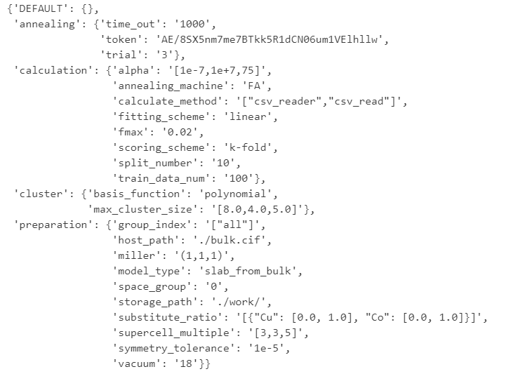

1. Introduction
SurfQit is software for modeling material surfaces for development of material related to solid surface chemistry. This tutorial serves as educational material where you can learn the necessary knowledge to use SurfQit.
1.1. Target Audience and Goals of This Tutorial
The target audience for this tutorial is researchers with theoretical calcluation environment involved in development of material related to solid surface chemistry. The goals of this tutorial are as follows:
Theoretical researchers studying the solid surface chemistry will be able to create computational models for complex materials in their research.
Experimental researchers studying the solid surface chemistry will be able to create computational models that can be useful in their research.
1.2. What is Solid Surface Chemistry?
Solid surface chemistry refers to the field of study that focuses on chemical reactions and mass transfer occurring on solid surfaces. Mainly, catalyst materials, adsorbent materials, electrode materials, and sensor materials are materials that utilize chemical phenomena occurring on solid surfaces. Based on solid surface chemistry, more advanced materials and new materials are being researched and developed.
1.3. Importance of Surface Modeling in Solid Surface Chemistry
Materials related to solid surface chemistry have various properties, and the quality of these properties is influenced by both macroscopic differences in material structure (e.g. morphology) and microscopic differences (e.g. atomic arrangement and electronic structure). Therefore, evaluating material properties begins with understanding the material’s structure. In particular, those chemical reaction proceeds on the solid surface, making it important to understand the microscopic structure of material surfaces that form gas-solid or liquid-solid interfaces.
However, because it is difficult to experimentally observe the microscopic structure of material surfaces, “surface modeling”, which reproduces the actual surface structure at the atomic level, is required.
1.4. Applications of Surface Models
Surface models constructed through surface modeling can be used in both computational and experimental research. In computational research, surface models can be used as input data for quantum chemical calculations and other simulations. In experimental research, surface models can serve as reference data for structural analyses, such as infrared spectroscopy or X-ray spectroscopy, allowing for an efficient explanation of material properties based on surface structure.

There are various methods for surface modeling, and SurfQit enables the creation of highly accurate surface models by using a surface modeling method based on quantum annealing.
In the next section, we will discuss the types and classifications of surface modeling methods.